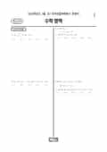

문제지

전국연합학력평가 · 시·도교육청 주관
2023년 3월 고3 학력평가 수학 확률과통계 1등급컷은 원점수 85점(추정), 표준점수 최고점은 159점입니다.
원점수 1등급컷은 공식 발표값이 아니라 EBSi·입시기관 값입니다. 등급별 값은 등급컷 표, 출처 구분은 데이터 원칙에 있습니다.

시험지를 먼저 풀어 보세요. 등급컷·표준점수·난이도는 흐리게 가려 뒀어요.
| 등급 | 원점수 | 표준점수 | 백분위 | 누적 |
|---|---|---|---|---|
| 1 | 85 | 138 | 96 | 4.17% |
| 2 | 73 | 128 | 89 | 11.06% |
| 3 | 61 | 118 | 77 | 23.49% |
| 4 | 43 | 103 | 60 | 40.84% |
| 5 | 27 | 89 | 40 | 60.9% |
| 6 | 19 | 82 | 24 | 77.05% |
| 7 | 16 | 79 | 14 | 89.16% |
| 8 | 10 | 75 | 4 | 97.02% |
등급별 컷 · 입시기관 3곳 원점수 추정 종합(이투스·종로학원·대성마이맥) · 공통+선택 점수 조합에 따라 다를 수 있음 · 만점 100점
| 등급 | 표준점수 이상 | 인원(명) | 비율 |
|---|---|---|---|
| 1 | 138 | 12,768 | 4.17% |
| 2 | 128 | 21,119 | 6.89% |
| 3 | 118 | 38,071 | 12.43% |
| 4 | 103 | 53,161 | 17.35% |
| 5 | 89 | 61,455 | 20.06% |
| 6 | 82 | 49,490 | 16.15% |
| 7 | 79 | 37,110 | 12.11% |
| 8 | 75 | 24,071 | 7.86% |
| 9 | 67 | 9,148 | 2.99% |
수학 영역 전체 응시자 기준이에요.
출처: 시·도교육청이 공개한 전국연합학력평가 성적 분석·통계자료(공개 자료 보기).
EBSi 응답자 기준으로 가장 많이 틀린 문항은 22번(4점, 주관식)이고, 오답률은 96.6%입니다. 상위 15문항 중 1문항은 정답보다 한 오답을 고른 사람이 더 많았습니다(28번: 정답 ⑤ 25.2%, ③ 37.2%). 오답률 50%를 넘은 문항은 13개입니다.
| 순위 | 문항 | 배점 | 오답률 | 정답 | 많이 고른 오답 |
|---|---|---|---|---|---|
| 1 | 22번 | 4점 | 96.6% | 729 | 주관식 |
| 2 | 30번 | 4점 | 91.5% | 45 | 주관식 |
| 3 | 20번 | 4점 | 88.9% | 66 | 주관식 |
| 4 | 21번 | 4점 | 84% | 12 | 주관식 |
| 5 | 29번 | 4점 | 75.1% | 120 | 주관식 |
| 6 | 28번 | 4점 | 74.8% | ⑤ | ③ 37.2% |
| 7 | 19번 | 3점 | 62.6% | 18 | 주관식 |
| 8 | 15번 | 4점 | 59.5% | ③ | ④ 24.2% |
| 9 | 14번 | 4점 | 58.4% | ⑤ | ③ 22.8% |
| 10 | 13번 | 4점 | 55.1% | ④ | ③ 23.2% |
| 11 | 12번 | 4점 | 54.3% | ④ | ③ 23.4% |
| 12 | 26번 | 3점 | 52.3% | ⑤ | ① 23.4% |
| 13 | 18번 | 3점 | 52.2% | 427 | 주관식 |
| 14 | 11번 | 4점 | 49.8% | ③ | ④ 22% |
| 15 | 17번 | 3점 | 45.8% | 11 | 주관식 |
EBSi 가채점 응답자 기준 · 전 문항 중 오답률 상위 15문항
출처: EBSi 역대 등급컷·오답률 공개 화면. 가채점에 참여한 EBSi 이용자 응답이라 전체 응시자 정답률과는 다를 수 있습니다.
발행 기관: 시·도교육청(전국연합학력평가). 파일 위치: 이 사이트가 보관한 사본. 저작권은 발행 기관에 있습니다. 원본과 다르거나 게시 중단이 필요하면 연락처로 알려 주세요. 등급컷 출처 구분은 데이터 원칙에서 설명합니다.
막대 색은 역대 대비 난이도 · 진한 막대가 이 시험 · 막대를 누르면 그 회차로 이동
| 회차 | 1등급컷 | 표점 최고 | 1등급 표점 | 난이도 |
|---|---|---|---|---|
| 3월 학평2023년 고3이 시험 | 85 | 159 | 138 | 어려움 |
| 10월 학평2022년 고3 | 84 | 154 | 136 | 어려움 |
| 7월 학평2022년 고3 | 86 | 152 | 136 | 쉬움 |
| 4월 학평2022년 고3 | 80 | 160 | 138 | 매우 어려움 |
| 3월 학평2022년 고3 | 79 | 165 | 141 | 매우 어려움 |
| 10월 학평2021년 고3 | 80 | 163 | 140 | 매우 어려움 |
| 7월 학평2021년 고3 | 90 | 144 | 135 | 매우 쉬움 |
| 4월 학평2021년 고3 | 88 | 147 | 133 | 쉬움 |
| 3월 학평2021년 고3 | 88 | 157 | 139 | 매우 쉬움 |
공통과목 22번(4점, 96.6%)은 최고차항의 계수가 정해진 사차함수로 정의한 함수의 극한 조건 문항, 20번(4점, 88.9%)은 삼차함수와 양의 실수로 정의한 함수의 조건 문항, 21번(4점, 84.0%)은 직선이 로그함수 곡선 등과 만나는 점을 다룬 문항이었습니다.
3점짜리 19번(62.6%)은 수직선 위를 움직이는 두 점 P, Q의 속도 문항, 객관식 15번(59.5%)은 홀짝에 따라 다음 항이 정해지는 자연수 수열 문항이었습니다.
확률과 통계 30번(4점, 91.5%)은 조건을 만족시키는 함수의 개수 문항, 29번(75.1%)은 숫자를 중복을 허락해 선택한 뒤 일렬로 나열하는 경우의 수 문항, 28번(74.8%)은 원형 식탁의 접시에 빵을 놓는 원순열 문항으로 응답의 37.2%가 한 오답에 몰렸습니다.
3월인데도 공통 20~22번이 모두 오답률 80%를 넘었습니다. 3월 시점에는 수열의 귀납적 정의(15번)와 속도·거리(19번)처럼 매년 반복되는 유형을 확실히 맞히는 것이 우선입니다. 시험 전체 흐름은 이 회차의 회차 해설에 정리했습니다.